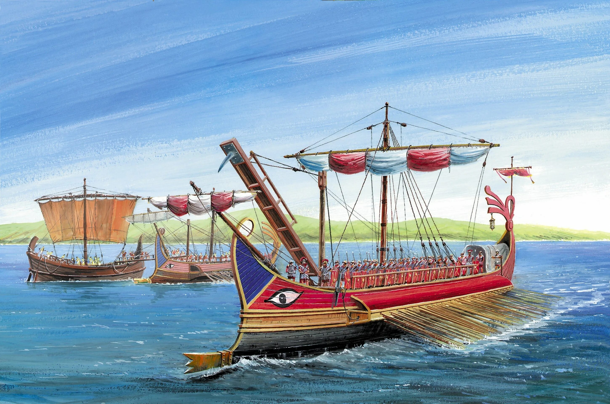
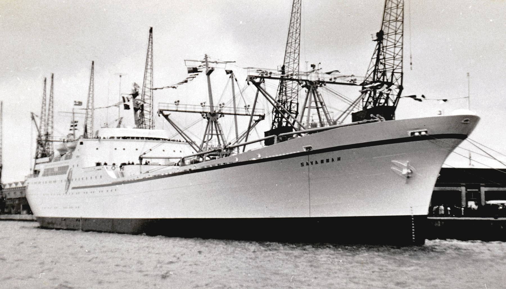

История морского флота
История морского флота насчитывает тысячи лет. С древних времён люди использовали корабли для торговли, исследования новых земель и ведения военных действий. Развитие судостроения оказало огромное влияние на мировую историю.

Основные этапы развития флота
-
Древний мир
- Египетские речные суда
- Финикийские торговые корабли
- Греческие триремы
-
Средние века
- Драккары викингов
- Военные галеры
- Парусные суда
-
Эпоха географических открытий
- Экспедиции Колумба
- Плавания Магеллана
- Освоение океанов
-
Современный флот
- Линкоры
- Авианосцы
- Подводные лодки
Интересный факт
Первым атомным гражданским судном стал корабль «Саванна», спущенный на воду в 1959 году.
